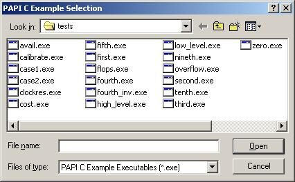
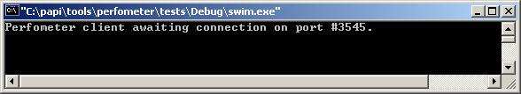
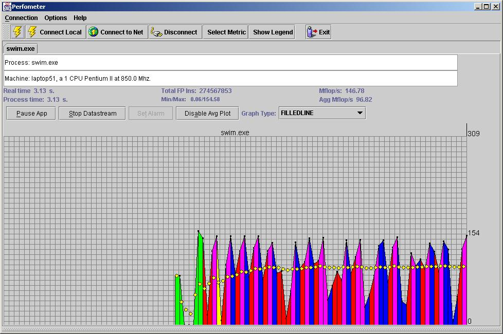

|
||||||

Welcome to PAPI for WindowsPAPI, or the Performance Application Programming Interface is a machine independent set of callable routines that provide access to the performance counters on most modern processors. This version of PAPI implements the interface for Windows NT, 2000 or XP running on Intel IA32 archtectures.If you are reading this, you have successfully installed PAPI on your machine. Below are some topics you may wish to learn more about:
Caveats:This release of PAPI for Windows contains the basic PAPI functionality. It works, but it is still a work in progress. Some fundamental limitations exist. For example, this implementation measures everything at the system level, not the process or thread level. Although PAPI properly binds itself to the processor on which it is called on a MultiProcessor Build of Windows, PAPI will still measure all events on that processor at the system rather than process level. Further, some advanced areas such as multiplexing, overflow, and profiling have not been exhaustively tested and may not perform as advertised. We hope to remove these restrictions in future releases. Check the PAPI website for information on current releases.About this InstallationThree installation options were presented to you when you installed WinPAPI:TypicalThe typical installation contains the following components:
CompactThe compact installation includes only the linkable WinPAPI DLL and WinPMC kernel driver . It assumes that you have access to the support and reference materials from another source, such as the PAPI CVS repository .CustomThe custom installation allows you to select only those components (such as just the help files) that you wish to install or reinstall on your system. Note that for access to the full sources of the driver, dll, and shell application, you must use the PAPI CVS repository .The WinPAPI Shell ApplicationThe Shell provides a simple interface to the basic functions of PAPI on Windows. You can run the shell from the shortcut in the Start->Programs->WinPAPI path, or by double-clicking the icon in the directory where WinPAPI was installed. The Shell consists of a splash screen with eight buttons, as described below:
ExitExits the Shell application.DiagnosticsDisplays a secondary menu of options as shown and described below:
Checks for proper installation of the low level PAPI components, verifies that the operating system is the Uniprocessor Free Build (this version of PAPI will not run on the MultiProcessor or Checked Build versions of Windows), and runs all of the C and Fortran example programs found in the default locations. The examples provided with PAPI will respond with a PASSED, SKIPPED or FAILED message, depending on the outcome. You can add your own examples to the SmokeTest simply by copying the executable to an appropriate directory. See the section on programming your own examples for more details. C ExamplesPresents an Open File dialog, as shown below, that allows you to select a precompiled C example to exercise specific PAPI functionality. if you want to modify existing examples or create your own, see the section on programming your own examples . All examples will open and execute in a separate console window, which will display the results and wait for a keypress on completion. Fortran ExamplesSimilar to C Examples, above, allows you to select a precompiled Fortran example. The Fortran examples mimic the C examples and are provided to demonstrate how to access the PAPI functions from Fortran.PerfometerExecutes the Perfometer.jar file, a graphical performance visualization tool for PAPI, written in Java. Perfometer monitors the performance of a separately running program that has been instrumented with calls to the Perfometer DLL. The instrumented program can run either on your machine or another machine connected over a network.Perfometer ExamplesPresents an Open File dialog similar to that for the C or Fortran examples. In this case, you can select a precompiled C or Fortran example that has been instrumented with calls to the Perfometer DLL. The example runs in a console window, and displays a message similar to the following:
With this message displayed, click the Perfometer button described above to execute the Perfometer.jar file and click on the Connect Local button to make a graphical connection to the target example. More information on using Perfometer can be found elsewhere . HelpIf enabled, opens this page in your default browser.NOTES:
WebLinks to the PAPI home page on the World Wide Web.The PAPI Programmer's ReferenceThe PAPI programming interface consists of a collection of 6 high-level calls, and roughly 40 low-level calls for both C and Fortran. Unix style man pages for each of these calls are available in html format here .The Example SuitesTwo sets of precompiled eamples are included with the WinPAPI Shell Application. The first set is written in C and resides in the /tests directory. The second similar set is written in Fortran and duplicates many of the C examples. This set is in the /ftests directory. Both sets execute as Windows console applications, and can be run quietly in batch mode to provide go/no-go testing of the PAPI installation, or from a command line to provide more detailed information.The examples provide a variety of measurements of operations and functionality on your system and print their results to the console window. If you run them from the Shell Application, they will dynamically open in a console window that is dismissed with a keystroke after the test completes. You can also run the examples directly by opening a console window and typing the name of the test as shown below for the C examples:
Programming your own examplesPAPI and the programs in the example suites were all developed using Microsoft Visual Studio. The C compiler was Visual C++ 6.0, and the Fortran compiler was Compaq Visual Fortran 6.6.0. If you want to modify any of the existing examples or use them as templates to create your own programs, you must have these or more recent tools installed on your computer. If you do, you can click the shortcut to PAPI_tests.dsw or PAPI_ftests.dsw found in the Start->Programs->WinPAPI path. These shortcuts will open a workspace in Visual Studio that contains projects for all the examples included with this installation. You can then open the source for any example to examine how things are done, or use any of the projects to pattern the development of a test of your own. Note that the files in all the projects are referenced by paths relative to the existing project. If you move anything, the builds are likely to break.In addition to the basic C and Fortran examples, several examples in both languages are provided to demonstrate the Perfometer interface. You can open the perfometer_tests.dsw project file to view and experiment with these examples. Typical Output from some C ExamplesThe programs included with the Example Suites are intended to illustrate a variety of features of PAPI, or solutions to specific user problems. They also serve as examples of programming with PAPI. The best way to understand what the tests are doing is to browse the source code included in the "Typical" installation. If you do not have Microsoft Visual Studio installed, any other text editor will work. These source files can be found in:%root%\src\tests (where %root% is the root directory where WinPAPI was installed). The output obtained on an 850 MHz Pentium III for a number of the C examples can be viewed here . The Perfometer Graphic Visualization ToolPerfometer is a collection of components that allow you to quickly create a visual interface to the performance of PAPI metrics in your code. These components include:
The Perfometer GUI can be invoked through the Perfometer button in the PAPI Shell Application or through the Start->Programs->WinPAPI->Perfometer shortcut. Either way produces a window similar to the one shown below:  The area below the top button bar will initially be blank, indicating that the GUI is not connected to an executing program. You can use the Connect Local or Connect to Net buttons to begin receiving data from running instrumented programs that are waiting for a connection. The color changes in the bar chart indicate calls to mark_perfometer() with varying color paramters. The other interface features of the Perfometer GUI are best discovered by inspection and experimentation. The WinPAPI Dynamic Link LibraryThe WinPAPI DLL consists of two pieces:
The source code for the PAPI library is not distributed with this installation. If you would like access to the source code and project to rebuild the library, you must use the PAPI CVS repository . The WinPMC Kernel DriverThe WinPMC Kernel Driver is a small (~3K) code that provides access to the normally restricted assembly instructions that allow programming of the hardware performance monitoring counters found on all Pentium class x86 cpus. If the driver has been installed successfully, the Driver Test button in the WinPAPI Shell will be enabled and the tests it performs will be successful.The driver file, WinPMC.sys, requires administrator privileges to be installed in C:\WINNT\system32\drivers. Also, the registry must be modified for this service to be recognized by calling programs. DO NOT attempt to install this driver on a new machine by simply copying the file! As with the PAPI library, The source code for the Kernel Driver is not distributed with this installation. The source code for the library is available in the PAPI CVS repository . In addition to Microsoft Visual Studio, you must also have a current version of the Microsoft NTDDK installed on your computer to rebuild the driver. The structure of PAPI files and folders on your diskThe folder structure created on your disk to hold the PAPI installation may appear rather arcane and complex. This is because it must reproduce the folder structure of the development environment in order for the test applications to build successfully. The structure of the default install is shown graphically below:
CVS access to the complete sources for PAPIAccess to all of the PAPI sources for Windows and all other supported platforms is available through the PAPI CVS Repository . CVS is a sophisticated version control system used primarily in the Unix world to allow multiple developers to work on a project simultaneously. You can interactively browse the PAPI CVS Repository through the WWW by visiting the PAPI CVS Web , or you can download a branch of the PAPI CVS tree using a program for Windows such as WinCVS . Contact the PAPI development team if you would like to participate in PAPI development. |
|
|
||||||||||||
|
||||||||||||